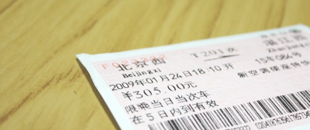

今天下午，我们将分别从陆，空两路奔向各自的家乡。 虽然有点晚，但还是能赶上过年的。今年的火车票特别难买，网上也一堆骂铁道部的。我自己是在19号早上排队希望买23号的票，当天七点多出的门，售票点是九点放票。去到售票点的时候才发现自己过于乐观，前面排了三十多个人左右，许多人是帮朋友排的，所以发票的时候，就会忽然有很多人直接挤到前面去。最终我排到将近十点，一问只剩站票了，白排了。只好准备买24号的票，是最晚的选择了，如果不行只能找黄牛，或者网上转让。第二天抱着最后一丝希望继续排，这次提前了很多出门，去了一个人少的售票点，排在了第八位。又在寒风中排了两个小时，终于买到了票。比较可惜的是差一点就可以买到卧铺，如果不是因为排我后面的那位部队干部插队的话。谁让那么巧排我前面小兵是他以前的下属呢，别人就招呼他上去排了。又那么巧这个干部和我买同一趟车，售票员说最后一张卧铺被他买走了。
虽然是坐票，但还是觉得可以了。工作后这是第三次春节回家，第一次拜托的以前实习公司的财务帮我订，订到了。第二次是去年南方雪灾，没敢坐火车，于是飞回去了。这次算第一次自己亲自去体验春运购票，熬了两天最终还算买到了。 购票这件大事搞定以后，心里就踏实了，接下两天没什么事，抽空把博客框架改了改。文章区域宽了点，以后可以放大图了，看着更舒畅。春节准备回家拍点照片，看看这个休闲小城市变成什么样子了，是否还是有很多破楼。春节快乐，节后再见啦。